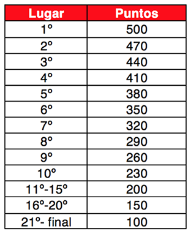

La competencia será individual y se llevará a cabo en 4 sesiones de concurso y 4 sesiones virtual en un total de 4 semanas.
En cada sesión virtual se tendrán tres niveles de problemas:
En esta sesión se tendrán 10 problemas por resolver en una semana, cada quien lo puede realizar en cualquier momento antes del cierre de la sesión, estos problemas estarán divididos en tres niveles.
La sesiones virtuales cerraran a las 14:00 hrs del día señalado
Cada sesión de concurso durara 3 horas y se otorgarán puntos según la siguiente tabla:  Las sesiones 1,2 y 4 de concurso serán en viernes de 6:00 pm a 9:00 pm, la sesión 3 de concurso sera en sábado de 10:00 am a 1:00 pm y se podrán realizar desde cualquier lugar con acceso a la plataforma de COJ.
Se contabilizarán los problemas aceptados y el tiempo acumulado en los concursos para desempatar la tabla de posiciones general
| 2 de Febrero al 9 de Febrero | 1a Sesión Virtual |
| Viernes 9 de Febrero | 1a Sesión Concurso |
| 9 de Febrero al 16 de Febrero | 2a Sesión Virtual |
| Viernes 16 de Febrero | 2a Sesión Concurso |
| 16 de Febrero al 23 de Febrero | 3a Sesión Virtual |
| Sábado 24 de Febrero | 3a Sesión Concurso |
| 22 de Febrero al 1 de Marzo | 4a Sesión Virtual |
| Viernes 2 de Marzo | 4a Sesión Concurso |
Se reconocerá al mejor programador del ITESM con la copa:
Top TEC Programmer 2018 Oracle Cup ITESM
Así como al ganador de cada zona:
Copa Top TEC Programmer 2018 Oracle Cup ITESM - Zona Norte.
Copa Top TEC Programmer 2018 Oracle Cup, ITESM - Zona Centro-Sur
Copa Top TEC Programmer 2018 Oracle Cup, ITESM - Zona Occidente.
En la rectoría que se encuentre el primer lugar, la copa de la rectoría se le otorgará al 2º mejor posicionado en la tabla
Se reconocerá con diploma al TOP 10 TEC de los programadores, camisetas especiales a los mejores 10 competidores
| Lugar | Usuario | V1 | V2 | V3 | V4 | C1 | C2 | C3 | C4 | Total |
|---|